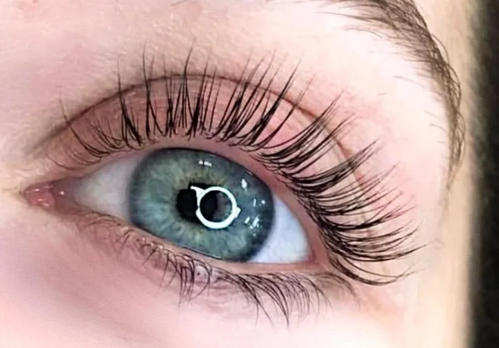
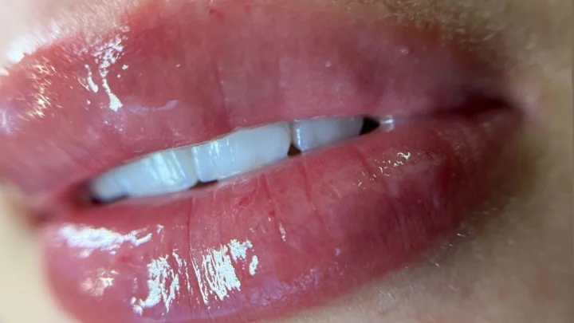

Brasília Shopping · Asa Norte
A beleza de
ser você.
Sobrancelhas, cílios, lábios, face e maquiagem. Cuidado personalizado para realçar o que é seu.

Um cuidado de cada vez
Encontre seu próximo ritual.
Algumas formas de valorizar seus traços. Conheça as possibilidades antes de agendar.
 OlharDesign de sobrancelhasUm desenho que respeita seus traços.Conhecer cuidado
OlharDesign de sobrancelhasUm desenho que respeita seus traços.Conhecer cuidado

CíliosLash LiftingCurvatura para valorizar o olhar.Conhecer cuidado
LábiosHydra GlossHidratação, maciez e brilho.Conhecer cuidado ExpressãoMaquiagemPara ocasiões e momentos especiais.Conhecer cuidado
ExpressãoMaquiagemPara ocasiões e momentos especiais.Conhecer cuidado
Procedimentos
O que você quer realçar?
Escolha uma área para conhecer as técnicas e conversar com a equipe sobre o seu atendimento.
Sobrancelhas
Do desenho ao alinhamento, encontre o cuidado que faz sentido para os seus fios.
- Design de sobrancelhas
- Desenho individualizado que acompanha o formato do rosto e o crescimento dos fios.
- Consultar
- Protocolo Frida
- Cuidado das sobrancelhas com foco na nutrição dos fios e avaliação individual.
- Consultar
- Brow Lamination
- Alinhamento dos fios naturais para dar volume visual e mudar a direção do penteado.
- Consultar
- Nano Fios
- Pigmentação com traços finos que imitam os fios para preencher visualmente falhas.
- Consultar
Cílios
Realce a curvatura dos cílios naturais.
Lábios
Conheça as opções para hidratação, brilho e definição da cor.
Face
Um olhar para os detalhes do rosto.
- Epilação facial
- Remoção de pelos faciais com linha. Converse com a equipe sobre as áreas que você quer cuidar.
- Consultar
Maquiagem
Conte à equipe qual é a ocasião e o acabamento que você tem em mente.
- Maquiagem Artística
- Produções criativas para ocasiões que pedem uma maquiagem mais expressiva.
- Consultar
Guia Frida
Qual cuidado
combina com você?
Conte o que você quer realçar. Em duas escolhas, encontre um procedimento para conhecer e conversar com a equipe.
- 1 Escolha a área que deseja cuidar.
- 2 Conte o resultado que procura.
- 3 Converse com a Frida para agendar.

A história da Frida
Duas irmãs.
Um olhar em comum.
Bruna e Bianca começaram juntas no design de sobrancelhas em 2015. A Frida cresceu a partir desse primeiro trabalho e hoje reúne técnicas para olhos, lábios, pele e maquiagem.
No estúdio, a conversa vem antes da técnica. A equipe escuta o que você quer realçar e orienta a escolha de acordo com seus traços e preferências.
Planejar minha visitaQuem já veio à Frida
“O atendimento é excelente, o ambiente super acolhedor.”
“Gosto da forma como sou bem recebida.”
Antes da visita.
Como agendo um horário?
Envie uma mensagem pelo WhatsApp da Frida. A equipe confirma valores, disponibilidade e o horário com você.
Preciso saber qual procedimento quero?
Você pode começar pelo Guia Frida ou contar à equipe o que gostaria de realçar. A escolha é feita com orientação profissional.
Qual a diferença entre design e Nano Fios?
O design trabalha o formato e os fios existentes. Nano Fios utiliza pigmento para criar traços finos que imitam os pelos.
Onde fica a entrada do estúdio?
Estamos no Brasília Shopping, na Torre Norte, sala 1030. Veja o endereço e abra a rota na seção abaixo.